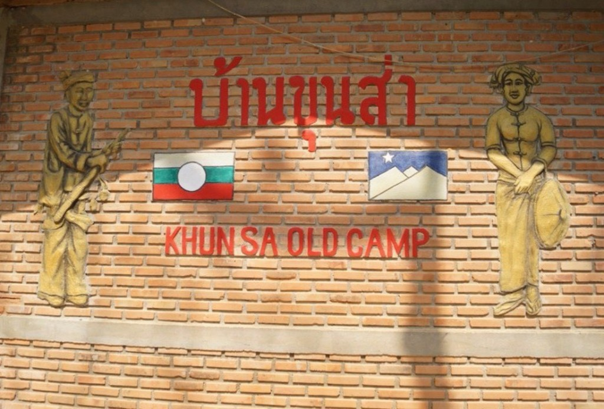

01 / 12
KHUN SA MEMORIAL
滿星疊地方歷史與紀念館
昆沙紀念館位於泰國清萊府滿星疊（Ban Thoed Thai，舊稱 Ban Hin Taek）。地方華文紀錄稱此地曾是昆沙在泰北安營的基地，也是大同中學所在的村子。
本網站由滿星疊大同中學學生整理地方歷史、園區文化與相關史料。


園區探索
園區據點
NEWS
園內情報

歷史影像
歷史影像中的隊列
滿星疊營地曾是蒙傣軍駐紮與整訓之地。這張隊列照片留下官兵列隊、山林為幕的現場尺度，也說明今日紀念館何以沿著舊日營區動線開放參觀。
閱讀全文園區動態
目前可參觀五處：銅像、土牢、炸彈殘骸、導覽室、壁畫
客房、餐廳、宿舍、副官住所、會客室、臥室、禪房暫不內覽
童軍駐房間現陳列撣邦地圖、老照片與昆沙生平展板